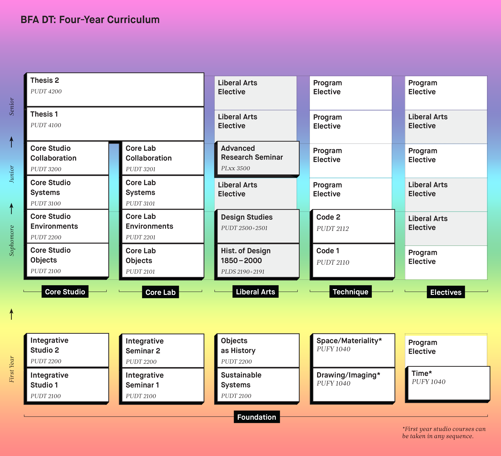

August 28
Studio Introduction Presentation
Individual presentations of the Studio Introduction assignment.
Voting
- clearest
- most memorable
- funniest
- friendliest
- most beautiful
- most entertaining
- least predictable
- most efficient
- best conceived
- best executed
Design + Technology Introduction
Design
Design is a methodical method of problem solving. It is a set of tools for identifying and understanding problems; proposing and testing solutions; and arriving—reliably—with an expression of purpose.
Design is the principle skill of the design technologist, and can be applied to challenges in all fields.
Technology + Computation
A technology is anything we create that extends our human capability.
Roads allow us to travel faster and farther. Language allows us to share our ideas faster and farther. Computing allows us to think faster and farther.
This isn’t just a convenience or shortcut. Computation is the most important technology yet developed. Computation allows us to travel to new territories of thoughts, explore higher complexities, and reach ideas that before would have been out of reach.
Computation is a principle media of the design technologist, and can be applied to challenges in all fields.
Design + Technology is Important
Design Technologists use the skills and tools of design to play a critical role in guiding the impact technology has on our lives and our world. Technology is in great need of this guidance. Technology is too important and too powerful to let happen without design.
Technologies are not neutral. The technologies we have access to and the way they are designed has an defining impact on how we approach problems, what we create, and how we lead our lives.
As the designers of technology we have a responsibility to consider the impact of our work broadly and to design according to our values:
- What are the biases in the technologies we create?
- What approaches do they encourage?
- What solutions do they suggest?
- What is the impact we want and what should we make to achieve that impact?
In Design Q&A, Charles Eames suggests a defintion of design that I have generally adopted:
One could describe Design as a plan for arranging elements to accomplish a particular purpose.
From this definition comes a method of design that focuses on understanding the features of a problem—the purpose—and evaluate a solution—the arrangement of elements—on how it impacts those features. It is critical howerver to also consider the broader impacts—externalities—of solutions. What are the costs and benefits created by a solution outside the features of the specific problem addressed?
Creative Technology Systems Lab

Systems
While the focus of this class will be on design process, the theme will be systems. We will discuss how your projects exist within a larger context, how they can feed on and impact outside forces, and how to form a set of design values that guide these impacts.
There will be less technical material in this class than in your previous Labs. We’ll spend about 5 of our about 30 days on exploring web APIs.
Developing a Personal Process
Many projects start with a good idea and end in a double-all-nighter with little work done in-between. Working this way can be fun and exciting when it leads to good results. Especially on smaller projects, where luck and raw, undisciplined talent is enough to scrape by, double-all-nighters work. But this is not a reliable way to work. This approach is stressful when things go wrong, frustrating when things fall apart, and tedious when you loose faith in the idea but must slog on anyway. Working this way makes it hard to forecast which project ideas will work and difficult to steer a project that is veering of course.
The double-all-nighter habit can be difficult to break. It can be frustrating to switch to a more methodical process-oriented design approach. Process-oriented design can feel slow, mechanical, formulaic. It may feel like you are setting your talent, creativity, and good-ideas aside. At times it may feel like you would do better if you went back to a good-idea-and–double-all-nighter approach.
In truth, all of this may even be true, at first. In time, through practice, your ability to use process-oriented design methods as tools will improve and they will begin to support your talents and allow you to create larger, more complicated projects with better results. You will find that your talent takes you further, your creativity deepens, and your ideas are better. When you have developed a personal, process-oriented approach to design, you will have a set of tools needed to reliably produce successful projects.
We are a Studio
Most of this class will be run like a design studio. Your fellow classmates will be one of your most important resources this semester, and you will be one of theirs.
Some work will be done in small groups, others will be done individually, but in all cases the studio will be an important resource for all projects for sharing and improving your work.
I expect you all to fully engage, support each other, and be open to that support.
Critiques
Criticim may be the most important tool used in the studio to help the artist or designer advance.
Broadly speaking critique might mean any commentary, assessment, or analysis. In art school, critique often means in-class discussion of student work. My view of critique, largely formed at cranbrook, is pretty narrow: a detailed analysis of a work exposing internal tensions and discontinuities. This form of criticism rejects prescription—authorative suggestions of what a work should be—and seeks to identify problems with the “internal logic” of the work itself.
In this class we will engage in critque rarely. However, we will engage in other forms of feedback often, including: discussion, commentary, coaching, suggesting, describing, riffing, and responding.
Syllabus
The full syllabus can be found here. Here are the highlights:
-
The primary goal of Systems Lab is to present design as a method of inquiry with a focus on process-oriented design, design research methods, and creative studio practice.
-
Primary Assignments: 5 in 5, Ideas in Form, Instruction Sets for Strangers, Technical Challenge, Final Project
-
Students will post course work—including reading responses, writing assignments, project prototypes, work in progress, and final documentation—to their own website.
-
The focus of this class is on design process not final results.
-
Daily materials: laptop + sketchbook + black pen + red pen + pencil
-
Attendance policy in short: Attend every class, get there early, stay late.
-
Every time you include anything in your work that you didn’t make, clearly credit the source.
Design Verbs Workshop
Assignment: Hello, Github Pages!
Due Thursday, August 30, 11:59am
Throughout this course you must maintain a website where you will post work-in-progress documentation, project deliverables and casestudies, and written responses to the readings. This site will be used in both Systems Studio and Systems Lab. You are required to create handwritten, static HTML, CSS, and Javascript hosted using Github Pages for this site. In this assignment you’ll get a basic “stub” online so we can start building on it in the next class.
- Create a personal Github account, if needed.
- Create a new repo for Systems Lab and Studio.
- Use Github pages to host a static website in your repo’s
/docsfolder. - Create an initial “stub” page including:
- Your name. Use the name you will go by in class.
- An image. You can choose any image, but choose wisely.
- Post a link to the assignment matrix.
Lesson Plan
| Time | ESA | Type | Activity |
|---|---|---|---|
| 12:10 | Engage | Present | Studio Introductions |
| 12:40 | Engage | Discussion | Studio Introductions Voting |
| 12:50 | Study | Lecture | Design + Technology Intro |
| 1:00 | Study | Lecture | Creative Technology Systems Lab |
| 1:20 | Engage | Discussion | Questions |
| 1:35 | Break | - | Break |
| 1:40 | Activate | Workshop | Design Verbs Workshop |
| 2:40 | Admin | Announce | Github Pages Assignemnt Intro |